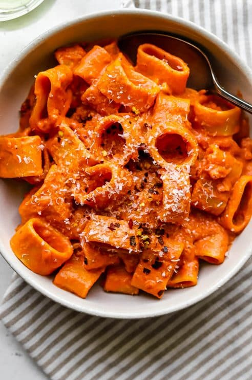

Vodka Pasta
Home

Description
Making a delicious vodka pasta from home is easy and quick.
With a handful of ingrediants and a little magic you can enjoy
this dish for dinner.
Ingrediants
- One pound of pasta
- Tomato Paste
- One pound of Italian Sauage
- One finely chopped onion
- Three to four cloves of garlic
- Vodka for deglazing pan
- Heavy cream
- Parm
Steps
- Fill a large pot with water and add generous pinch of salt to the water
- Finally chop your onion and mince garlic
- Heat a couple tablespoons of olive oil in your pan on medium/high heat
- Add onions/garlic to pan and cook for several minutes
- Remove sausage from casings and add to pan, breaking up with wooden spoon. Cook until the meat is browned
- Add tomato paste to sausage meat and stir until well incoporated
- Cook pasta
- When pasta is cooked reserve one cup of pasta water and strain pasta
- Deglaze sausage with vodka
- Add pasta water to sausage and then mix in heavy cream
- Add pasta to the sauce and mix until well incoporated
- Add fresh shredded parm and serve immediately. Enjoy!